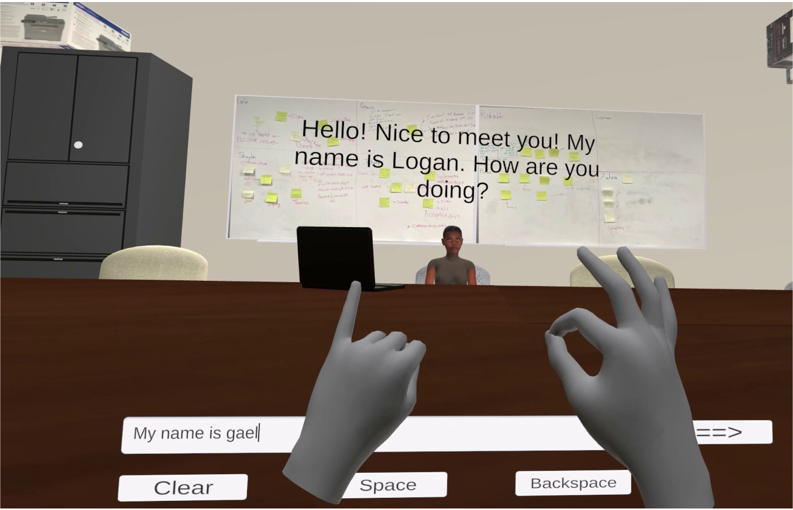

Scroll Down To See!

Development Tools: Unity, C#, OpenAI API, Quest 1
This project aimed to spread awareness of the hard of hearing community - a practicing tool to support learning and retention of the ASL alphabet through immersive and engaging environments. Placed in a virtual environment, users could sign messages to an avatar that would use ChatGPT and TTS to respond in engaging conversations with users. The intent to mimic natural dialogue with real people and add to the immersion. Additionally, there is another option that doesn't utilize AI and a virtual avatar and instead has preset phrases for users to phrase that gives instant feedback character by character.
Scroll Down